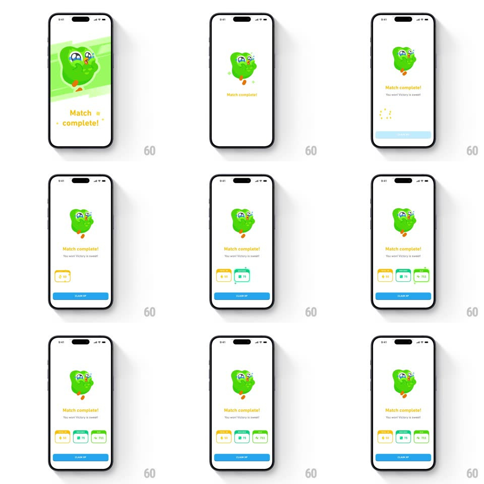

Media
Frame-by-frame

Rebuild this animation 1:1: Duolingo's match-complete celebration - Duo sparkles with star-struck eyes on a green brush card, "Match complete!" bounces in with the "You won! Victory is sweet!" subline, and three reward cards pop in above the Claim XP button.

Rebuild this animation 1:1: Duolingo's match-complete celebration - Duo sparkles with star-struck eyes on a green brush card, "Match complete!" bounces in with the "You won! Victory is sweet!" subline, and three reward cards pop in above the Claim XP button. ## Integration Integration: stack-agnostic spec - springs given as stiffness/damping, timed motions as duration + curve; map every value to your framework and animation library of choice. ## Scene White screen: Duo the owl with sparkling star eyes on a light green brush-stroke card, yellow "Match complete!" title, grey "You won! Victory is sweet!" subline, three reward cards (60 XP on yellow, 75 on teal, 333 on green), and a blue CLAIM XP pill. A dotted ring spins briefly under the first card slot. ## Motion spec Pattern: sequential celebration build, ~2.5s. - Art: the brush card wipes in diagonally (350ms) as Duo springs in (scale 0.5 -> 1.08 -> 1, spring ~320/16, 500ms); the star sparkles in his eyes twinkle on a 700ms loop. - Title: "Match complete!" bounces up (translateY 14px -> 0, spring ~300/18) with the subline fading in after (200ms, +120ms). - Rewards: the three cards pop in left to right (scale 0.6 -> 1.05 -> 1, spring ~360/20, 110ms stagger), values counting up on land (300ms). - Button: CLAIM XP slides up (250ms, +100ms). ## Calibration - Duo's eye-sparkle loop is the only ambient motion - everything else settles. - Cards land in order of value: XP first, bonus second, total third. ## Reduced motion Elements fade in (200ms, 80ms stagger); eyes static. ## Don't miss - Duo faces the viewer dead-on with both eyes as stars - this is the "victory" expression, not the skating or anime art. - The green brush card has the same hand-painted edge as the other celebration variants.